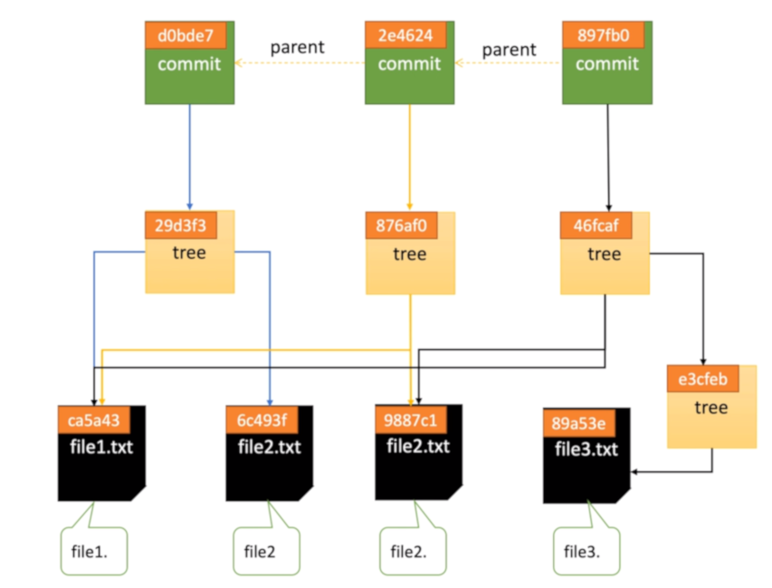

Git常用命令
shell命令行显示当前分支
# 编辑~/.bashrc 文件，末尾加入如下代码
# shell show git branch name
function git_branch {
branch="`git branch 2>/dev/null | grep "^\*" | sed -e "s/^\*\ //"`"
if [ "${branch}" != "" ];then
if [ "${branch}" = "(no branch)" ];then
branch="(`git rev-parse --short HEAD`...)"
fi
echo " git:($branch)"
fi
}
export PS1='\u@:\w\[\033[01;31m\]$(git_branch)\[\033[00m\]\$ '
# 执行如下命令生效
source ~/.bashrc
本地操作
git init #初始化本地库
git status #查看工作区、暂存区的状态
git log #查看本地仓库提交记录
git reflog #可以查看所有分支的所有操作记录（包括已经被删除的 commit 记录和 reset 的操作）
git add <file name> #将工作区的文件添加到暂存区(git add . 将所有文件添加到暂存区)
git commit -m "提交日志" #文件从暂存区提交到本地仓库
git commit --amend #修改最后一次提交的日志说明
git rm --cached <file name> #移除暂存区的文件(文件还未提交到版本库)
git reset HEAD <file name> #移除暂存区的文件（文件已经提交过）
git checkout -- <file name> #用版本库最后一次提交的文件替换工作区同名文件（文件更改撤消，-- 与文件名有空格）
git ls-files -s #查看暂存区文件
git cat-file -t <file name> #查看.git库文件类型
git cat-file -p <file name> #查看git库文件内容
#fill system check 文件系统检查，用来对本地和远程仓库的一致性检查，dangling objects悬空对象在悬空对象列表中，使用git show commitId查看悬空记录的详情
git fsck
git prune #删除有不可访问的对象（垃圾对像）
git存储结构图

本地仓库与远程仓库交互
git clone <远程库地址> #克隆远程库 功能：①完整的克隆远程库为本地库，②为本地库新建origin别名，③初始化本地库
git remote -v #查看远程库地址别名
git remote add <别名> <远程库地址> #新建远程库地址别名
git remote rm <别名> #删除本地中远程库别名
git push <别名> <分支名> #本地库某个分支推送到远程库，分支必须指定
git push --set-upstream <别名> <分支名> #本地分支与远程分支关联，以后直接git push
git pull <别名> <分支名> #把远程库的修改拉取到本地
git pull <别名> <分支名> --allow-unrelated-histories #拉取远程仓库合并本地
分支操作
git branch #查看分支
git branch <branch name> #创建分支
git branch -d <branch name> #删除分支
git checkout <branch name> #切换分支
git merge <branch name> #将<branch name>分支合并到当前分支
git branch --merged #查看已经合并到当前分支的所有分支
git branch --no-merged #查看还末合并到当前分支的所有分支
#切换分支保留工作区内容（如当前在dev分支，如想到master分支可执行如下命令）
git worktree add ../url-master(与当前项目同级目录创建新项目) master(要切换的分支名)
git worktree list #查看worktree
git worktree remove url(目录名) #删除worktree
关于tag标签命令
git tag v1.0.0 #创建标签
git tag v1.0.0-m'test git tag' #创建标签带描述
git tag #查看所有标签
git show v1.0.0 #查看某个标签
git push origin--tags #向远程推送标签
git tag-d v1.0.0 #删除本地标签
git push origin:refs/tags/V1.0.0 #删除远程标签
Clone指定目录
git init #初始化本地仓库
git remote add origin <remote address> #指定远程仓库地址
git config core.sparsecheckout true #开启sparse checkout功能
echo "子目录名称" >> .git/info/sparse-checkout #添加需要拉取的目录名
git pull origin master #取远程master分支上的内容
Git子模块的使用
.gitmodules文件该配置文件保存了项目 URL 与已经拉取的本地目录之间的映射
子模块相关命令
#添加子模块（命令后面加上想要跟踪的项目的相对或绝对URL）
git submodule add #例git submodule add https://github.com/chaconinc/DbConnector
#查看子模块
git submodule
#删除子模块
git submodule deinit subPath/
git rm subpath
rm -rf .git/modules/subPath
#克隆包含子模块的项目
#方式一
1 git clone #克隆主项目
2 git submodule init #始化本地配置文件
3 git submodule update #从该项目中抓取所有数据
git submodule update --init --recursive #同时执行2、3步
#方式二
git clone --recurse-submodules url #直接执行此命令克隆项目
#更新子模块项目
git submodule update --remote